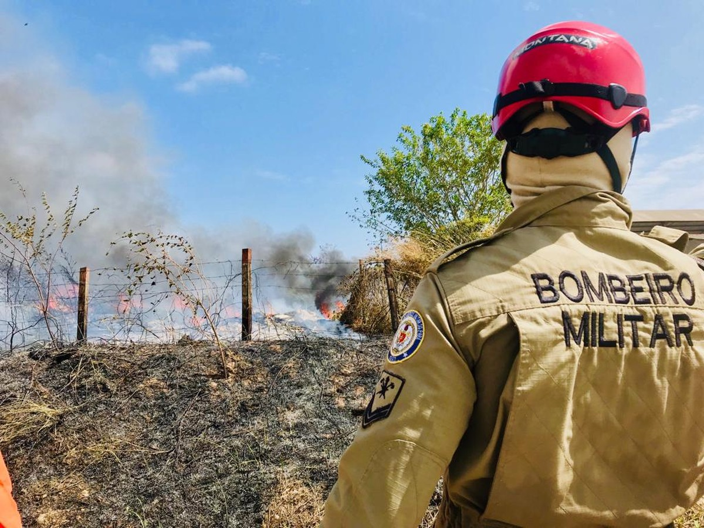

QUEIMADAS
Combate e prevenção em caso de queimadas
As queimadas no Brasil atingiram níveis alarmantes, configurando-se como uma crise ambiental que requer atenção imediata. Recentemente, incêndios florestais de grande escala têm se propagado em várias regiões, incluindo São Paulo, Goiás, Mato Grosso e Amazonas, causando uma destruição sem precedentes. Além de devastar grandes extensões de vegetação nativa, esses incêndios trazem repercussões que vão além dos danos ambientais imediatos.
Educação e Conscientização: É de suma importância promover campanhas educativas sobre o risco das queimadas e como previnir
Monitoramento e Vigilância: Utilizar tecnologias de monitoramento, como satélites e drones, para detectar focos de incêndio rapidamente.
Proibição de Queimadas em Períodos Críticos: Respeitar as proibições de queimadas durante períodos de seca e altas temperaturas.
Em caso de queimadas, é essencial acionar imediatamente o Corpo de Bombeiros pelo número 193. Para combater pequenos focos de incêndio, utilize equipamentos como extintores de incêndio, pás, enxadas e baldes de água.
Além disso, é fundamental ter um plano de evacuação com rotas de fuga bem definidas para situações de emergência. Identifique também abrigos temporários onde as pessoas possam se refugiar em caso de evacuação. Tenha sempre à disposição um kit de primeiros socorros e saiba como tratar queimaduras e inalação de fumaça. Trabalhar em conjunto com a comunidade é crucial para criar uma rede de apoio e resposta rápida.